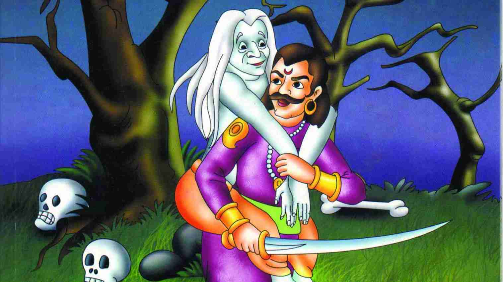

|

|
Vikram was the name of a king. He ruled over a city on the banks of
Godavari River. He was very famous for his bravery and courage.
People loved him because he always rendered justice.
One day a sage came to the court of Vikram and gifted him a fruit.
The king handed it over to his treasurer. Thereafter, the sage kept
coming to the court daily to gift a fruit to the king. The king
could not understand the reason behind this behaviour. But still he
did not try to find out the sage's intentions.
However, one morning, Vikram noticed a monkey sitting on the palace
wall and gave the fruit to it. The monkey had started eating the
fruit when suddenly a dazzling gem fell out of it. The King was very
surprised. He immediately ordered his treasurer to get him all the
fruits kept in the storage. The fruits had gone bad but when the
king had them crushed, each one of them yielded a precious gem. The
generous King donated all these gems to the poor and waited for the
sage’s visit to the court.
Vikram welcomed the sage and asked him "Your Holiness! Can you
please tell me why you have been giving me such precious gifts?
Without good reason, I cannot accept any gifts from you."
The sage replied, "I need the help of a brave man for a spiritual
goal. Will you help me?" Vikram readily agreed to this. So the sage
said, "O King, please come to the burial ground on the next moonless
night. It is at a distance of 20 miles from here. I will wait for
you under a banyan tree." Vikram agreed to follow the instructions.
|